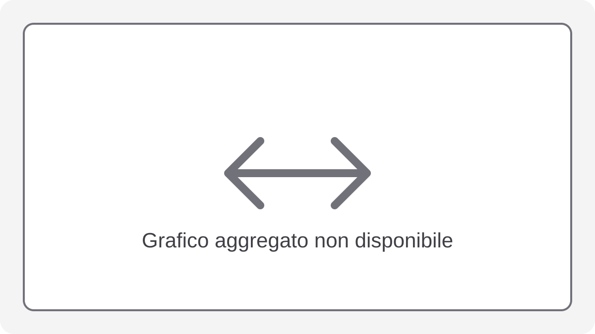

I grafici vengono pubblicati dal servizio feedback quando è disponibile uno snapshot aggregato compatibile. Il repository Web non contiene risultati o grafici storici.
Verifica della disponibilità dei grafici aggregati. Nel frattempo vengono mostrati segnaposto privi di dati.
Generali

Panoramica complessiva delle prestazioni.Quota di risposte corrette sul totale.Bilancio tra risposte corrette ed errate.
Tempi
Tempo medio necessario per rispondere.Confronto dei tempi per tipologia di domanda.Relazione tra rapidita e accuratezza.Distribuzione dei tempi di risposta su coorti aggregate.Variabilita dei tempi per tipologia.Tempo medio aggregato per posizione della domanda nel quiz.
Andamento temporale
Evoluzione dell'accuratezza nel tempo.Evoluzione della velocita di risposta nel tempo.
Comportamentali
Effetto delle opzioni di configurazione sulle prestazioni.Accuratezza aggregata per tipologia di esercizio.
Demografici
Confronto delle prestazioni tra gruppi demografici.Relazione tra feedback raccolto e risultati.
Accuratezza
Accuratezza suddivisa per tipologia.Confronto tra difficolta percepita e risultato ottenuto.Quadro multipannello delle principali tipologie.Radar sintetico delle competenze osservate.
Avanzati
Tendenza aggregata delle prestazioni nelle finestre temporali disponibili.Andamento globale delle sessioni aggregate nel tempo.Relazione aggregata tra tempo medio e accuratezza.